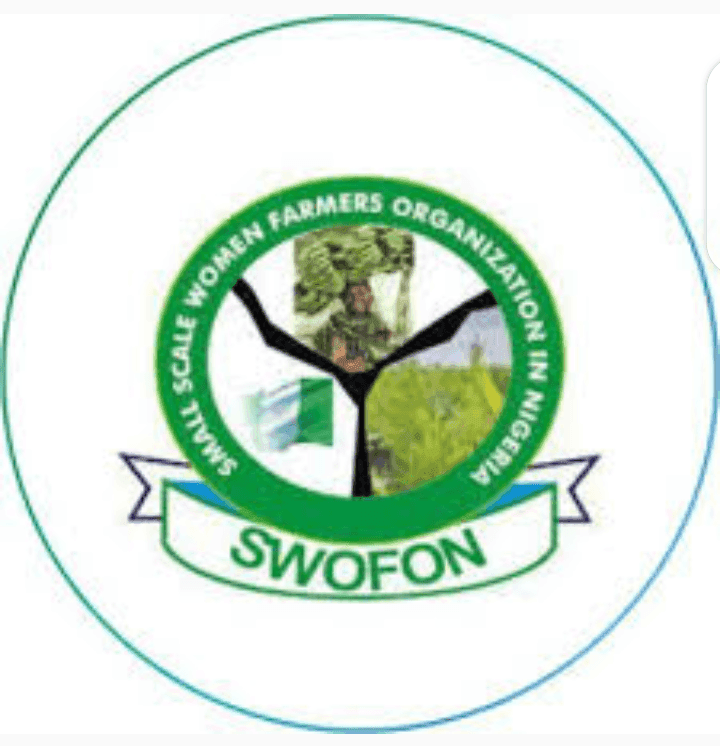

Nappade Maɓɓe Gollaaji haa Howru Buuɗu
SWOFON ko ngoongal non-governmental ɓe watii e nappade golleeji maɓɓe ɓilteere. Amen wahitinude gollol mahmudu ɓe maɓɓe waawi gollaaji. Ngoongal amen nappade maɓɓe hokkadinol caggal, jiggu jawdi, e gollol gooraaji.